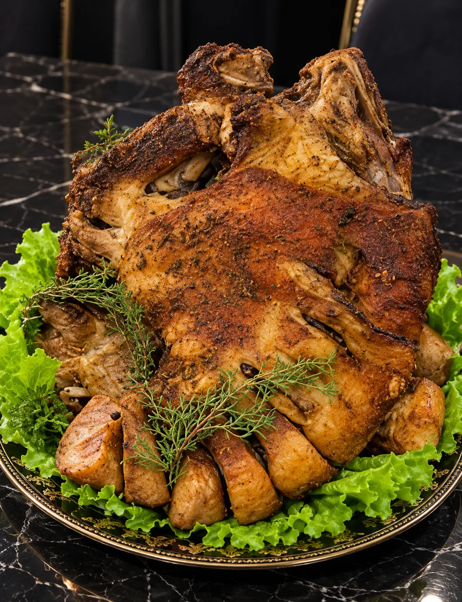
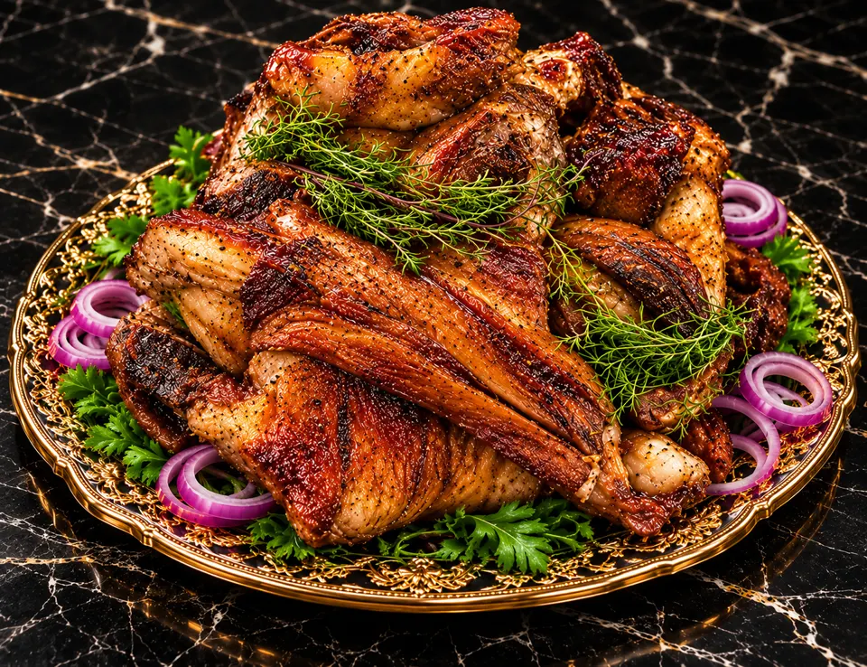

Milliy taomlar oilaviy restorani
Olim Polvon Milliy Taomlari — norin, qovurma lag'mon va kaboblar uchun butun oila bilan keladigan joy. O'zbek, uyg'ur va Yevropa taomlari bitta menyuda.


Oshxona
Menyu asosi — Toshkentda «milliy taomlar»ga aynan shular uchun borishadi: norin, beshbarmoq, halim, jarkob, ilik sho'rva va no'xat sho'rak.
Uyg'ur qismi — bu lag'monlar. Lag'mon qo'lda cho'ziladi, qovurma lag'monni esa mehmonlar restoranning asosiy taomi deyishadi.
Kaboblar halol go'shtdan cho'g'da pishiriladi: taxta, napoleon, kavkaz, g'ijduvon qiyma, tovuq va baliq.
Go'sht markazi
Restoranda go'sht do'koni ishlaydi: ot go'shtidan qazi va rulet, mol va qo'y go'shti ruleti, dudlangan tovuq.
Yetkazib berish
+998 90 916 77 74, +998 97 766 99 88 telefonlari yoki Telegram-bot orqali buyurtma.
Butun oila uchun
Davra uchun katta porsiyalar — masalan, bir kilogrammlik qazili norin.

Bilish muhim
- Oshxonao'zbek, uyg'ur, Yevropa
- Ish vaqtihar kuni, 06:00 – 23:00
- To'lovnaqd, karta, o'tkazma, muddatli to'lov
- Yetkazib berish va olib ketishbor
- Wi-Fibor
- Sport translyatsiyalaribor
Suratlar
Taom suratlari — Olim Polvon restoraniniki. Non surati — Wikimedia Commons:
- 11T 20240408 202006 — BeshevI, CC0